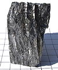

beryllium

Definition: Beryllium is a chemical element with the symbol Be and atomic number 4. It is a steel-gray, strong, lightweight and brittle alkaline earth metal. It is a divalent element that occurs naturally only in combination with other elements to form minerals. Notable gemstones high in beryllium include beryl (aquamarine, emerald, red beryl) and chrysoberyl. It is a relatively rare element in the universe, usually occurring as a product of the spallation of larger atomic nuclei that have collided with cosmic rays. Within the cores of stars, beryllium is depleted as it is fused into heavier elements. Beryllium constitutes about 0.0004 percent by mass of Earth's crust. The world's annual beryllium production of 220 tons is usually manufactured by extraction from the mineral beryl, a difficult process because beryllium bonds strongly to oxygen.
Source: Wikipedia
Wikipedia Page
Wikidata Page